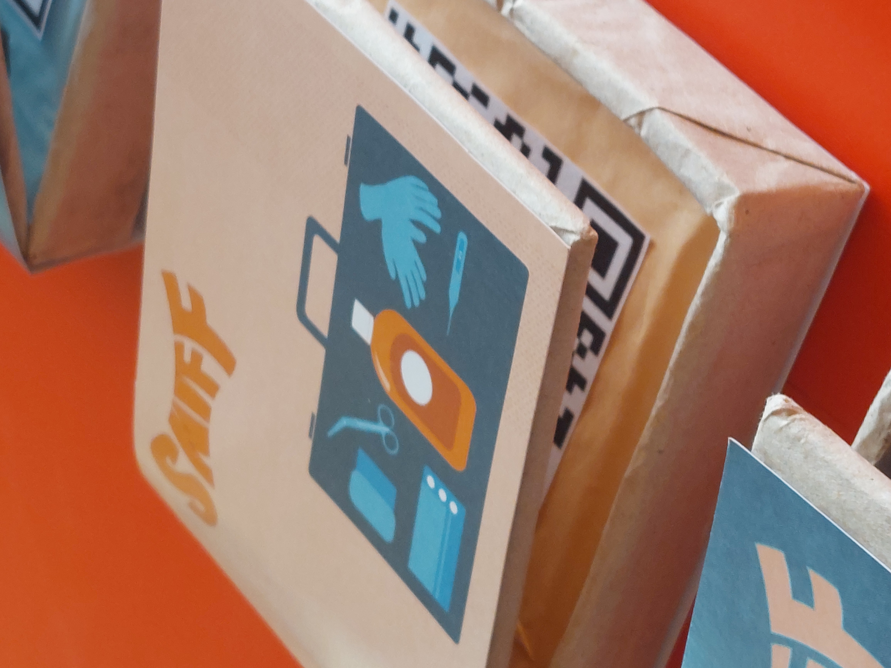
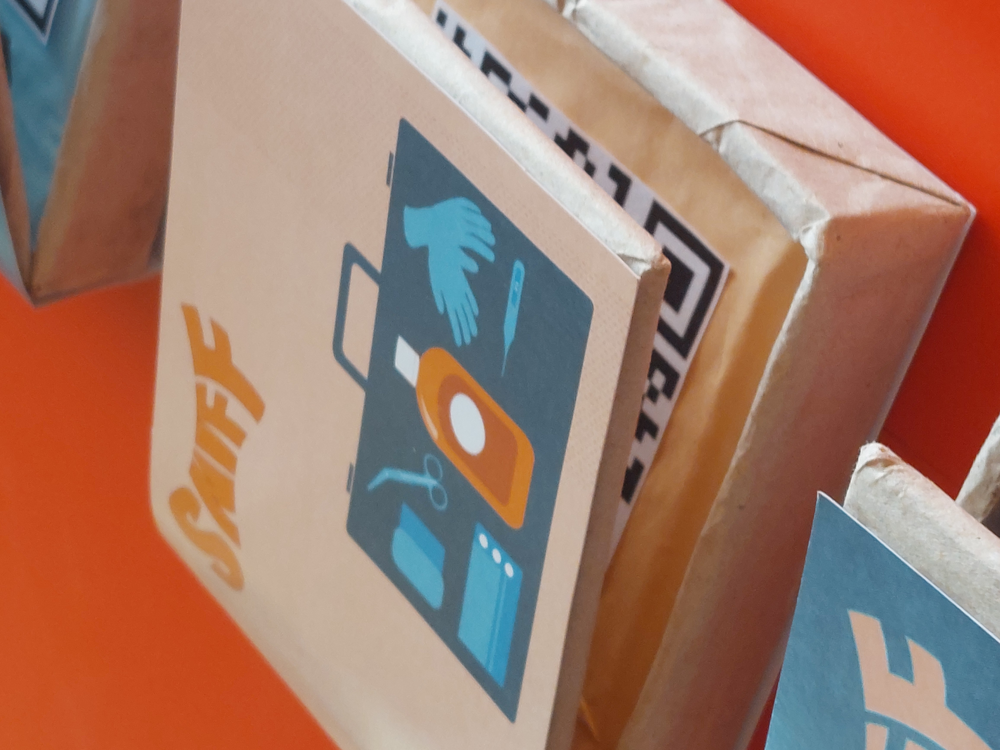
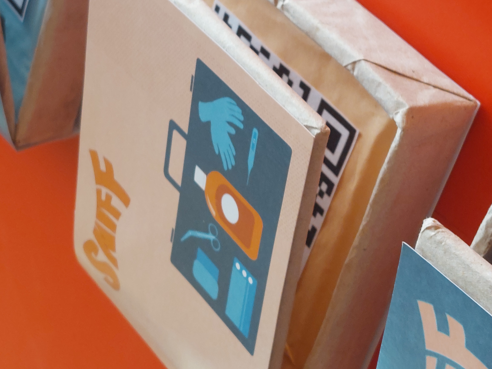

smell and nostalgia



you ever smelled something that immediately reminded you of something you experienced? our sense of smell is deeply connected to our memories and can evoke emotions. we literally smell them. so my group and i decided to create a concept for a smell library. as a prototype we collected six smells and let people smell them while recording their reaction on camera. the videos can be viewed over the qr-codes.